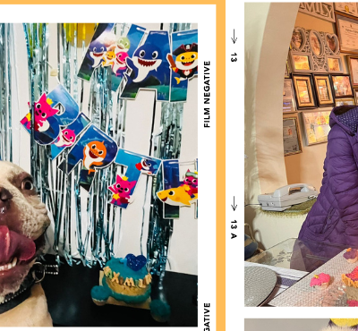
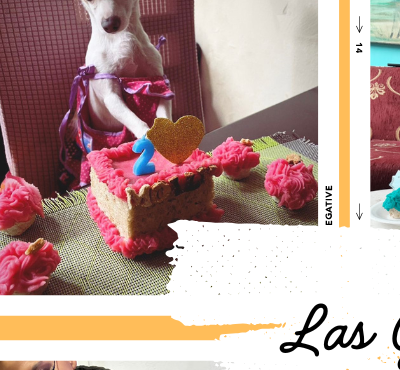

Golosinas hechas con amor para tu mejor amigo
Tortas, galletas y bocaditos artesanales 100% aptos para perros y gatos, para cada cumpleaños y celebración.
Ver catálogo¿Quiénes somos?
5 años consintiendo mascotas en Quito

Hecho en familia
Somos un emprendimiento familiar quiteño con más de 5 años horneando golosinas 100% seguras para perros y gatos.

Fiestas inolvidables
Diseñamos tortas y kits de cumpleaños temáticos para que la fiesta de tu mascota sea única.

Ingredientes seguros
Sin azúcar, sin chocolate, sin conservantes dañinos: solo ingredientes aptos para el consumo canino y felino.